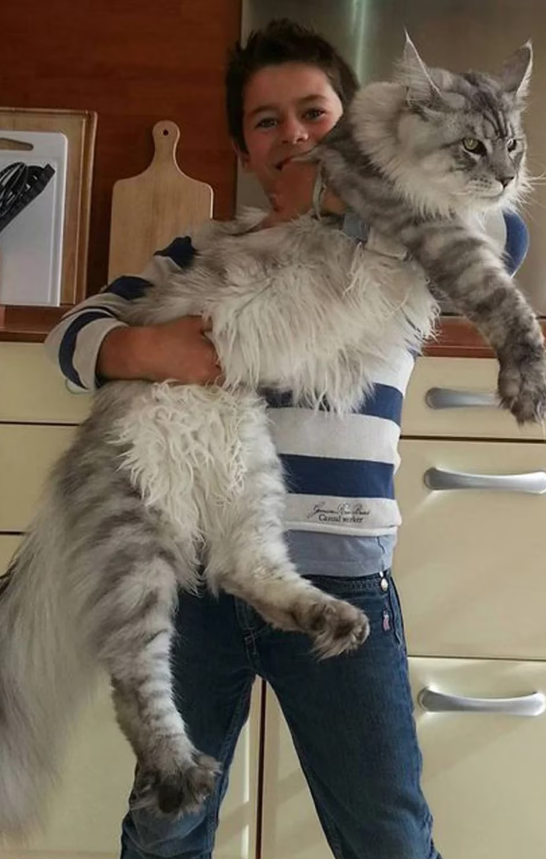

Haz click aquí para ver más imágenes de gatos.
Los gatos gordos son un tema importante a considerar cuando se habla de la salud y el bienestar de nuestras mascotas felinas. El sobrepeso en los gatos puede conducir a una serie de problemas de salud y disminuir su calidad de vida.
El sobrepeso en los gatos puede llevar a problemas de movilidad y disminución de la energía. Los gatos con exceso de peso pueden tener dificultades para moverse con la misma agilidad y saltar como solían hacerlo. Esto puede afectar su capacidad para jugar y disfrutar de actividades físicas.
¿Cuál es el peso promedio de un gato?
No todos los gatos cumplen con los mismos requisitos de peso.El Maine Coon, por ejemplo, pesa mucho más que el siamés. Debe tenerse en cuenta que un gato pesa en promedio de 3,5 a 4,5 kilogramos en la edad adulta.
Del mismo modo, la curva de peso de su gato no será la misma si el gato está esterilizado o no. Los gatos esterilizados ganan peso más fácilmente, especialmente en los primeros meses después de la operación. Por lo tanto, es importante controlar su dieta para evitar la obesidad.
¿Cómo mantener el peso normal de un gato?
Para mantener un gato en un peso normal, es importante tener en cuenta varios aspectos.
Aquí hay algunos consejos para lograrlo:
Alimentación adecuada : Proporciona a tu gato una dieta equilibrada y de alta calidad. Consulta con tu veterinario para determinar la cantidad adecuada de alimento y la frecuencia de las comidas según la edad, el tamaño y las necesidades individuales de tu gato.
Control de las porciones: Evita sobrealimentar a tu gato y controla las porciones de comida que le das. Sigue las recomendaciones del fabricante del alimento y ajusta la cantidad según las necesidades de tu gato.
Evita las golosinas y los alimentos no adecuados: Limítale las golosinas y evita darle alimentos no adecuados para los gatos, como comida humana, ya que pueden ser altos en calorías y no proporcionar los nutrientes necesarios.
Estimulación y ejercicio: Fomenta la actividad física de tu gato mediante el juego regular y proporcionándole juguetes interactivos. Esto ayudará a mantener su peso bajo control y a mantenerlo en forma.
Control veterinario regular: Lleva a tu gato a revisiones veterinarias periódicas para evaluar su peso, salud general y recibir asesoramiento profesional sobre su dieta y actividad física.
Recuerda que cada gato es único, por lo que es importante adaptar las recomendaciones según las necesidades específicas de tu mascota. Si tienes preocupaciones sobre el peso de tu gato, te recomiendo consultar a un veterinario para obtener una evaluación y recomendaciones personalizadas.
¿Comó ayudar a un gato obeso mediante ejercicio?
Juego interactivo: Dedica tiempo diariamente para jugar con tu gato utilizando juguetes interactivos, como cañas de pescar con plumas o pelotas que puedan perseguir. Estimula su instinto de caza y movimiento con juegos que impliquen perseguir y saltar.
Juguetes estimulantes: Proporciona juguetes que fomenten la actividad, como juguetes que dispensan comida o rompecabezas para gatos. Estos juguetes pueden mantener a tu gato entretenido y activo mientras trabajan para obtener su recompensa.
Estructuras para trepar: Instala estantes, escaleras o árboles para gatos en tu hogar para que tu gato pueda trepar y saltar. Esto les brinda la oportunidad de ejercitar sus músculos y promueve el movimiento vertical.
Sesiones de caza: Crea una sesión de caza simulada ocultando pequeñas porciones de comida en diferentes áreas de la casa. Esto estimulará el instinto natural de tu gato y lo mantendrá activo mientras busca su comida.
Incrementa gradualmente la actividad : Comienza con sesiones cortas de ejercicio y ve aumentando gradualmente la duración y la intensidad a medida que tu gato se vaya adaptando. Es importante tener en cuenta las limitaciones individuales de tu gato y respetar su nivel de energía.
Alimentos para ayudar a la dieta de un gato gordo
Lista de ingredientes como base para las comidas caseras saludables para gatos obesos:
- Proteínas magras
- Vegetales
- Caldo de pollo bajo en sodio
- Aceite de pescado